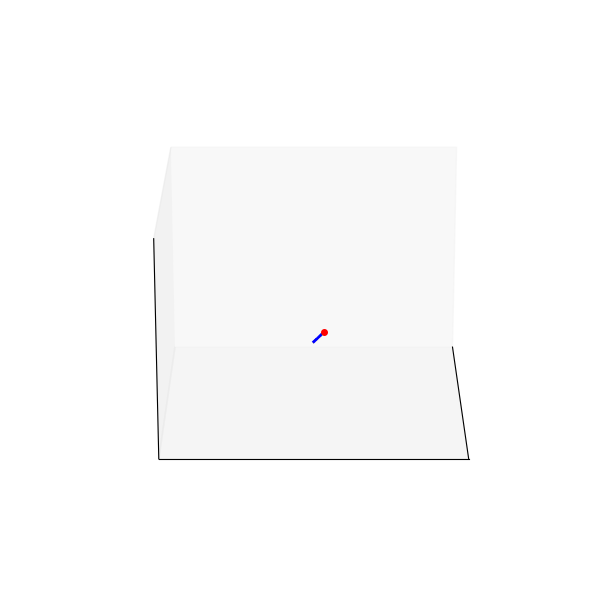
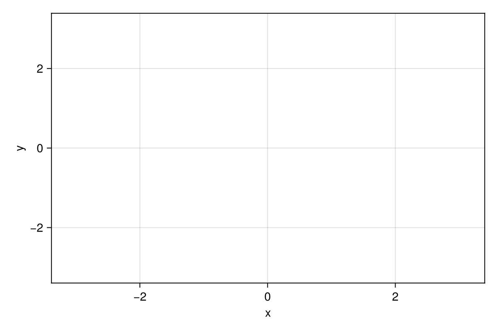
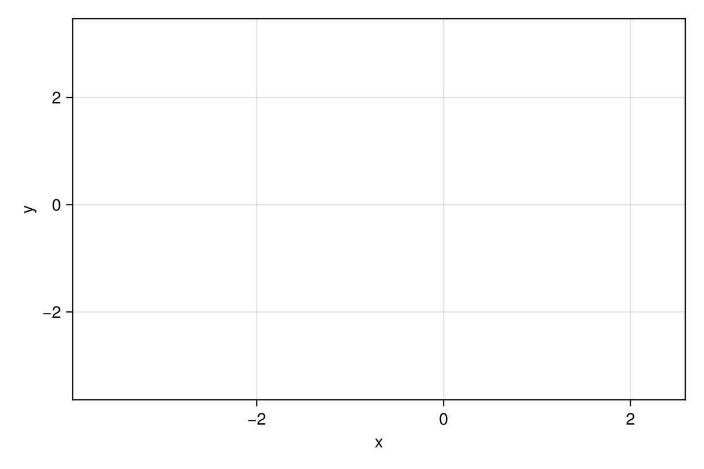
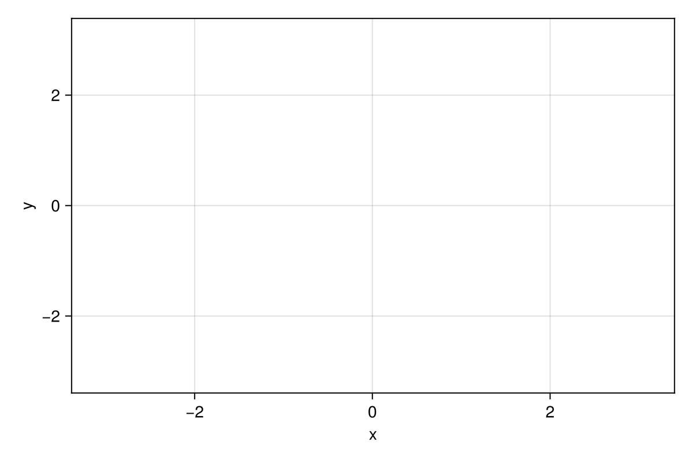
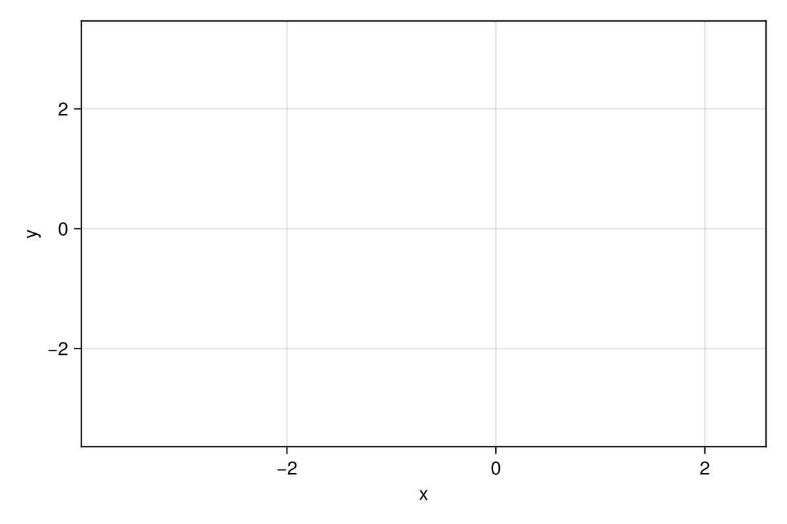
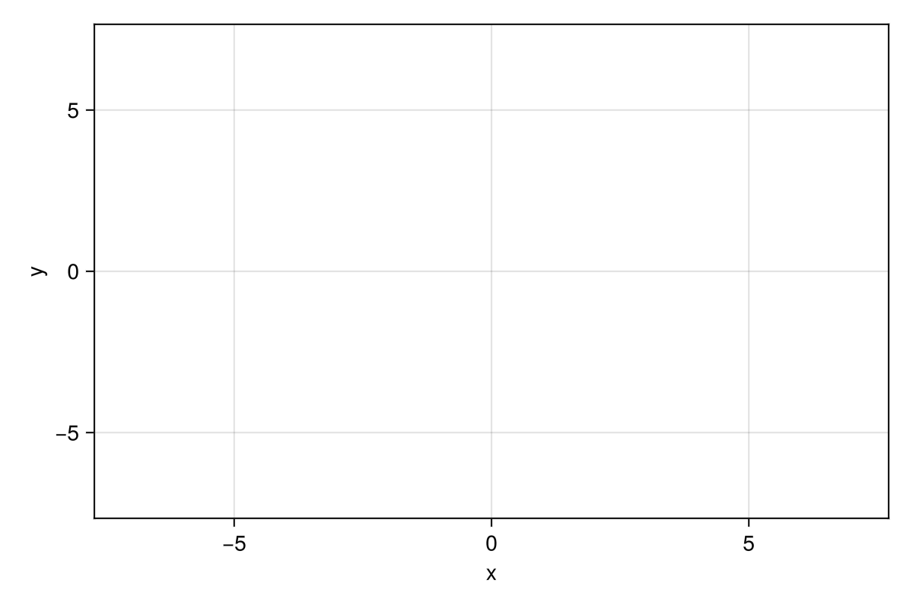
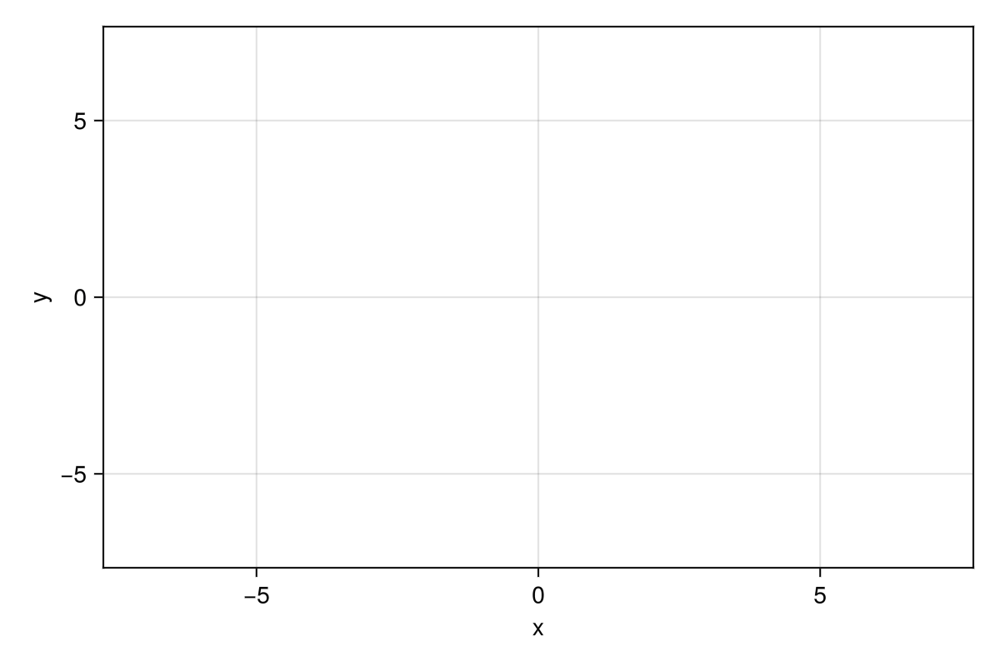

3D Models
Double Helix (DNA) Structure
Get the Blender file here!
Surfaces
$f(x,y) = sin(x) + cos(y)$
$f(x,y) = (x^2 + 3y^2)e^{-x^2-y^2}$
Parametric Curves

The Trefoil Knot
 A Toroidal Spiral

Parametric curve given by $x= 2.3 \cos(10 t) + \cos (23t), y=2.3\sin (10t) - \sin(23t)$ for $t\in [0,2\pi]$

Parametric curve given by $x= \cos(t) + \cos (6t) + 2 \sin (3t), y=\sin (t) + \sin(6t) + 2\cos(3t)$ for $t\in [0,2\pi]$
A Toroidal Spiral

Parametric curve given by $x= 2.3 \cos(10 t) + \cos (23t), y=2.3\sin (10t) - \sin(23t)$ for $t\in [0,2\pi]$

Parametric curve given by $x= \cos(t) + \cos (6t) + 2 \sin (3t), y=\sin (t) + \sin(6t) + 2\cos(3t)$ for $t\in [0,2\pi]$
 Parametric curve given by $x= \cos (3t), y=\sin (2t)$ for $t\in [0,2\pi]$

Parametric curve given by $x= t + \sin (5t), y= t + \sin (6t)$ for $t\in [-7,7]$
Parametric curve given by $x= \cos (3t), y=\sin (2t)$ for $t\in [0,2\pi]$

Parametric curve given by $x= t + \sin (5t), y= t + \sin (6t)$ for $t\in [-7,7]$